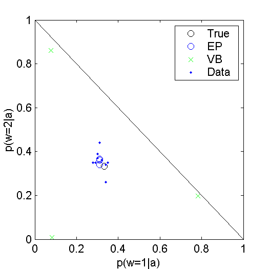
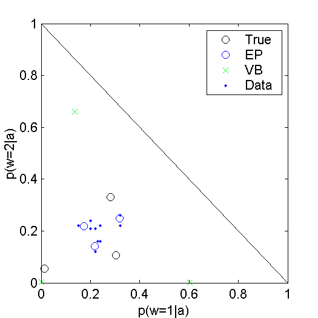
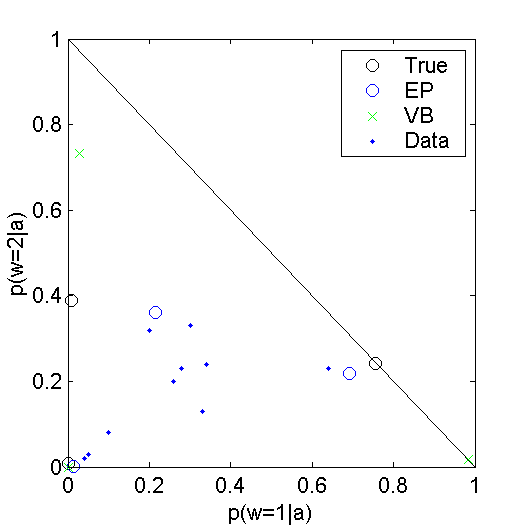
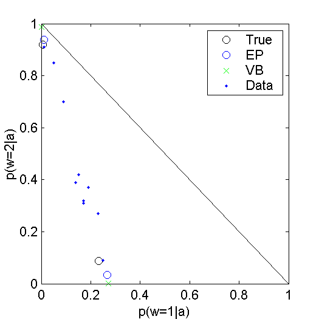
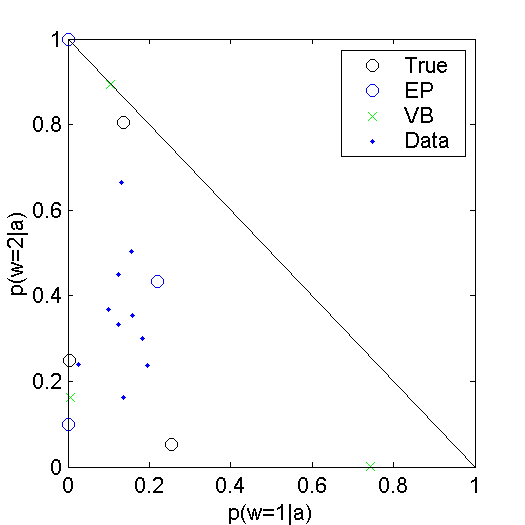
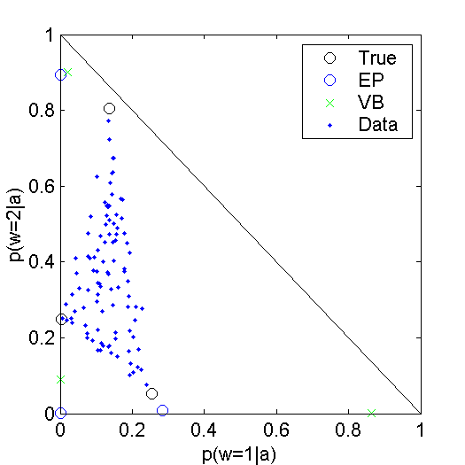

True aspects equal

True aspects slightly spread out

More spread out

Two aspects (fewer aspects than words)

Doc len 10,000

100 docs of len 10,000

100 docs of len 100
Initial aspects:
1.8705533e-001 1.9462531e-001 1.7976830e-001 2.2720505e-001 2.1134602e-001 2.0031929e-001 1.8673649e-001 2.1593019e-001 1.8391741e-001 2.1309662e-001 1.8332725e-001 1.8120753e-001 2.2369119e-001 2.1850893e-001 1.9326510e-00110 docs of 100 words each:
A A A A A A A A A A A A A A A A A A A A A B B B B B B B B B B B B B B B B B B B B B B C C C C C C C C C C C C C C C C C D D D D D D D D D D D D D D D D D D D D E E E E E E E E E E E E E E E E E E E E A A A A A A A A A A A A A A A A A A A A B B B B B B B B B B B B B B B B B B B B B B B B B B C C C C C C C C C C C C C C C C C D D D D D D D D D D D D D D D E E E E E E E E E E E E E E E E E E E E E E A A A A A A A A A A A A A A A A B B B B B B B B B B B B B B B B B B B C C C C C C C C C C C C C C C C C C C C C C C C C C C C C C C C C C D D D D D D D D D D D D D D D D E E E E E E E E E E E E E E E A A A A A A A A A A A A A A B B B B B B B B B B B B B B B B B B B B B B B B B B B B B C C C C C C C C C C C C C C C C C C C C C C C D D D D D D D D D D D D D D D D D D D D D E E E E E E E E E E E E E A A A A A A A A A A A A A A A A A B B B B B B B B B B B B C C C C C C C C C C C C C C C C C C D D D D D D D D D D D D D D D D D D D D D D D D D D D D D D E E E E E E E E E E E E E E E E E E E E E E E A A A A A A A A A A A A A A A A A A A A B B B B B B B B B B B B B B B B B C C C C C C C C C C C C C C C C C C C D D D D D D D D D D D D D D D D E E E E E E E E E E E E E E E E E E E E E E E E E E E E A A A A A A A A A A A A A A A A A A A A A B B B B B B B B B B B B B B B B B B B B B B B B B C C C C C C C C C C C C C C C C D D D D D D D D D D D D D D D D D D E E E E E E E E E E E E E E E E E E E E A A A A A A A A A A A A A A A A A A A A A A B B B B B B B B B B B B B B B B B B B B C C C C C C C C C C C C C C C C C C D D D D D D D D D D D D D D D D D D D D D E E E E E E E E E E E E E E E E E E E A A A A A A A A A A A A A A A A A A A A A B B B B B B B B B B B B B B B B B B B B B C C C C C C C C C C C C C C C C C C C C C C C D D D D D D D D D D D D D D D D D D D D E E E E E E E E E E E E E E E A A A A A A A A A A A A A A A A A A A A A A A A B B B B B B B B B B B B B B B B B B B B B C C C C C C C C C C C C C C C C D D D D D D D D D D D D D D D D D D E E E E E E E E E E E E E E E E E E E E E
Converged result:
0.1960 0.2300 0.1575
0.1339 0.2517 0.2443
0.1749 0.1446 0.2910
0.2549 0.1540 0.1822
0.2403 0.2197 0.1251
Converged result:
0.2619 0.3000 0.0175
0.0000 0.5389 0.1050
0.0113 0.0086 0.6045
0.3061 0.0041 0.2712
0.4207 0.1483 0.0017